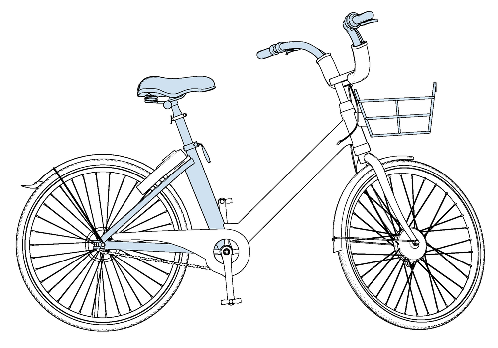
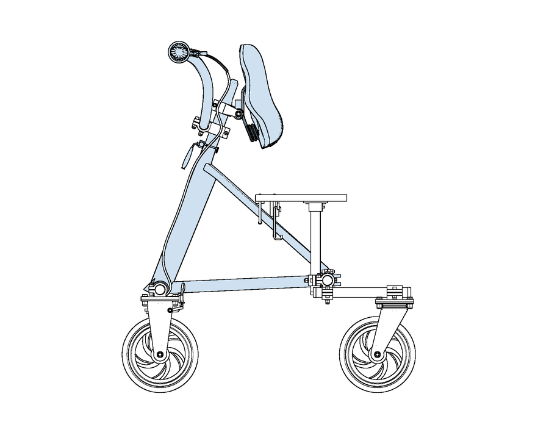
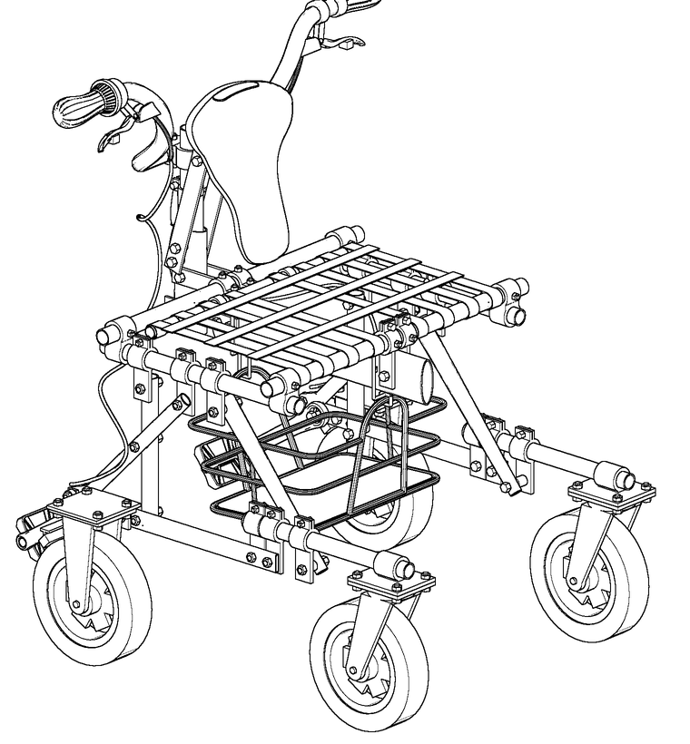

Turned back to front, the rear half of the bike is already the spine of a rollator.

a
bKeep the welded triangle whole and turn it round.
The bottom bracket takes a steel cross-tube to the rear casters; the dropouts take a stud and two cross-tubes to the front. The seat tube rises at 70° toward the user and carries the original seat post, handlebar and saddle, now a backrest.
Splitting the triangle into two side frames needed more cuts and overloaded the seatstays.
Scheme A (Figure 4) cut the frame into left and right halves and joined them with clamps under a woven seat. The beam model gave the seatstays a utilisation of 2.0 under a seated load and 2.85 in fatigue, and 15 mm deflection at the grips.
A single front caster saved material but tipped with 5–51 kg on a seat corner or grip.
Four wheels with the rear track widened to 660 mm put both grips inside the support polygon.
